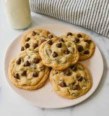

Appetizers
-
Bonesoup Ksh 210
Served along with root vegetables and ground beef.

-
Spaghetti Ksh 230
served with garlic bread and vegges

-
Cocktail Ksh 150
classic mojito infused with fresh lime mint and sugar
Main Courses
- Nyama Choma Ksh 2000
-
Grilled Chicken Ksh 1000
It comes out juicy,perfect over salads,sandwiches or for meal prep.

-
Fried Beef Ksh 700
Its cooked in such a way that is both pleasantly chewy and highly seasoned, served along with rice

Goat meat marinated in a flavourful herb to give tender and delicious meat.
Desserts
-
Banana Pudding Ksh 120
Delicious pudding that is vanilla flavoured.

-
Chocolate Cake Ksh 200
The crumb is beautifully tender and moist flavoured with cocoa powder.

-
Chocolate Chip Cookies Ksh 150
Ultra soft and chewy cookies.
